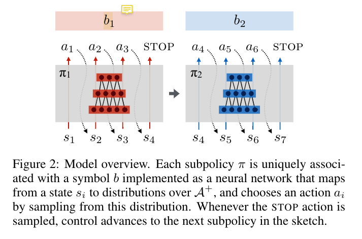
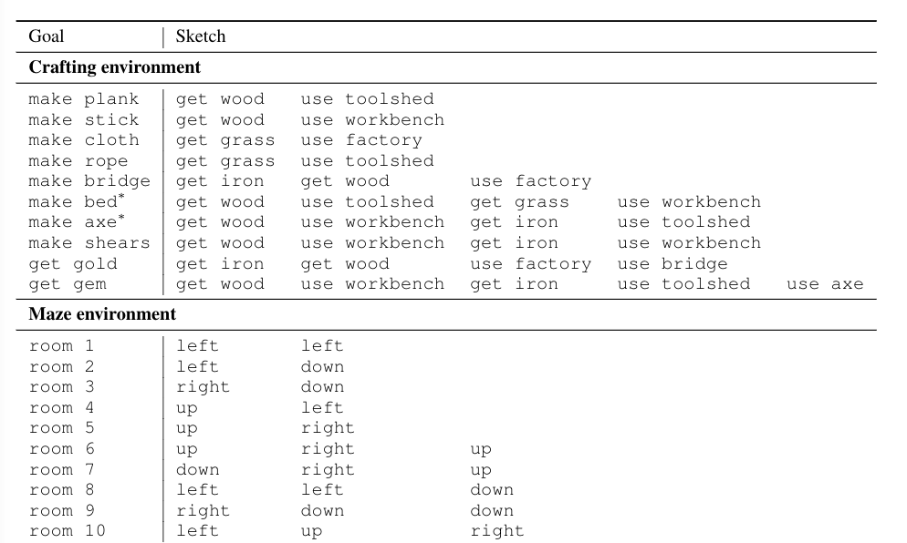
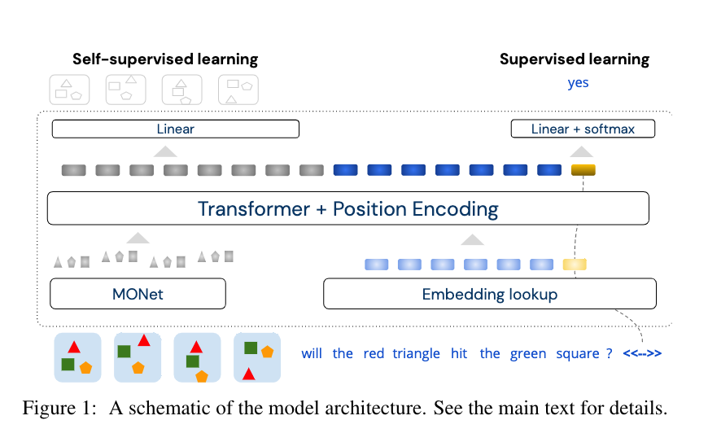
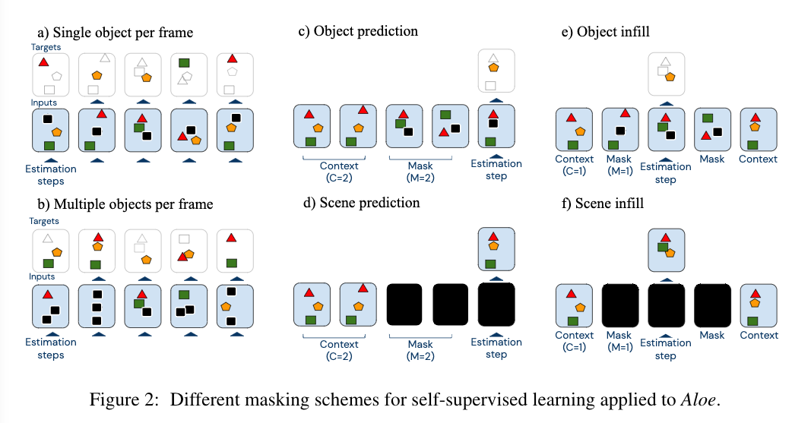
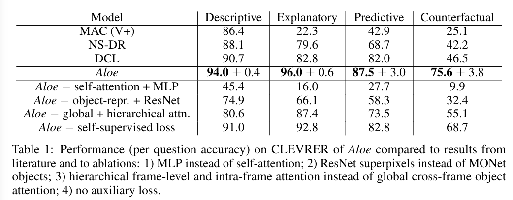
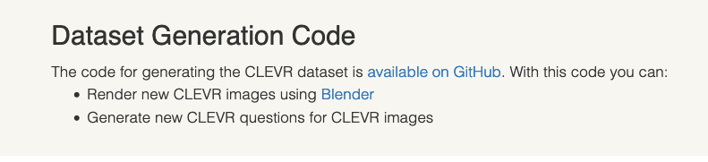

Last Week’s Work Review#
In the research field of Grounded Language Learning, what will be my research questions?
- formalise the question
- think about the assumptions
- pick out one problem (not big but specific) from the existing experiments
You need password to access to the content, go to Slack *#phdsukai to find more.
Part of this article is encrypted with password:
[TOC]
TODO List#
-
Ready Grounded Language Learning survey
-
[Hu et al., 2019] Hengyuan Hu, Denis Yarats, Qucheng Gong, Yuandong Tian, and Mike Lewis. Hierarchical decision making by generating and following natural language instructions. arXiv preprint arXiv:1906.00744, 2019. (see how the hierarchical language information can be combined with hierarchical RL agent)
-
Jiang, Yiding, et al. “Language as an abstraction for hierarchical deep reinforcement learning.” arXiv preprint arXiv:1906.07343 (2019).
-
-
Come up with formal questions and your assumptions (based on the existing research literature)
-
Check IGLU environment and check new competition settings.
-
Continue watching NeurIPS 2021
Rephrase my research problem#
I want to rephrase my research objectives based on the survey paper “Luketina, Jelena, et al. “A survey of reinforcement learning informed by natural language.” arXiv preprint arXiv:1906.03926 (2019).”
Big picture (very big)#
There are two significant issues in the field of Reinforcement Learning
- sample efficiency
- e.g., SOTA Atari RL agent DreamV2 require 10^8 number of episode to surpass human performance.
- generalisation ability
- a RL agent often require a re-train process if the environment changes. (e.g., mentioned in OpenAI DOTA2 agent paper)
So here comes the assumptions:
- The use of natural language could enhance
-
- the sample efficiency
- e.g., the knowledge of the (pre-trained task-independent) language model may help to structure the agent’s policy
- In the paper, the author gave an example – an effective language model should assign a higher (prior) probability to “get the green apple from the tree behind the house” than to “get the green tree from the apple behind the house”
- e.g., the knowledge of the (pre-trained task-independent) language model may help to structure the agent’s policy
- and the generalisation ability of RL agents
- e.g., the prior knowledge from (pre-trained task independent) langauge model could form useful object representation that helps the agent’s to solve task under unseen environment
- In the paper, the author gave an example – the agent is used to interact with “spider” in the environment, and now there is a “scorpion” which is unseen before. However, the modern language module would give very close embeddings for these two objects that have the similar features. Thus the agent can transfer its knowledge of “spiders” into dealing with unseen “scorpions”
- e.g., the prior knowledge from (pre-trained task independent) langauge model could form useful object representation that helps the agent’s to solve task under unseen environment
- the sample efficiency
Types of RL informed by NL#
The author classify the RL informed by NL into two types
Language conditioned RL
- when the task itself is to interpret and execute instructions given in natual language
- e.g, the reward is given in natural language format, the observation from the agent is provided in natural language format. So TextWorld environment is about training Language conditioned RL
Language assisted RL (*Our direction)
- explore how knowledge about the structure of world can be transferred from natural language corpora and methods into RL tasks, (and how the RL environment could improve the language model) in cases where language itself is not essential to the task
- e.g., the Montezuma’s Revenge game itself does not need language. And the language reward shaping from Prasoon Goyal’s paper is about assisting RL agent with language.
Research problems#
Big problem:
- the study in language assistance in RL (i.e., language is not essential in the task), especially using
- task-independent language data to form prior commonsense knowledge
- unstructured and descriptive natural language text instead of structured and instructive text
- Previously I kept mentioning about “level of abstraction of natural language”. In fact, a lot more general term should be “the abstraction hierarchy in natural language” and this is one characteristic of unstructured human language (well, more background literature required)
- Other characteristics of unstructured natural language (*not relevant currently)
- anaphora, ellipsis, and bridging, mentioned in Percy Liang’s paper
So, I rephrase my research problem:
| before | after |
|---|---|
| My research studies how to let RL agent understand high level language instructions | My research studies the feasibility and extent of grounded language learning from unstructured task-dependent natural language corpora in interactive environment. |
Here are the constraints for my research problem to narrow down the scope:
-
We focus on “interactive environment”: an environments that an agent can interact with.
- The environments for reinforcement learning research are interactive environment. e.g., language assisted RL environment: natural language information is not the core components in the RL task, e.g., agent can still play Montezuma’s Revenge without knowing the walkthrough.
- The observations of the agent are often visual inputs.
- Thus grounded language learning is essential here.
- The environments for reinforcement learning research are interactive environment. e.g., language assisted RL environment: natural language information is not the core components in the RL task, e.g., agent can still play Montezuma’s Revenge without knowing the walkthrough.
-
We focus on “task-dependent corpora”: how to extract information from the task-dependent text and hence structure the policy of agents.
- “Task-dependent” -> walkthrough, speech from gamer during streaming etc.
- often means “low-resource” because available public corpora about a specific task are limited.
- The study on how to transfer commonsense knowledge from the task independent corpora to the RL agent is interesting, but this looks like a very big research problem.
- “Task-dependent” -> walkthrough, speech from gamer during streaming etc.
-
We may research on what is a more suitable architecture for RL model that utilise unstructured language information.
- e.g., Hierarchical Deep RL: HRL decomposes RL problems into a hierarchy of subproblems such that higher-level parent tasks invoke lower-level child tasks as if they were primitive actions
- Assumption: The hierarchical structure of natural language and its compositionally make it a particularly good candidate for representing policies in hierarchical RL.
-
We may research on what properties of unstructured corpora is most
- e.g., The abstraction hierarchy in the descriptive language text: book
-
Grounded language learning is about learning the meaning of natural language units (e.g., utterance, phrase, or words) by locating the referent in an interactive environment.
- It is not only about mapping mentioned objects in the environment. Instead, we should also aim for understanding the events, actions, or abstract concepts by interacting with the environment
- Assumption: an interactive environment helps to strengthen the language model, and the language model can in turn assist with task solving in the environment (e.g, RL task).
- explainability
- data efficiency
- generalisation ability
(Please tell me if this is ok)
Research Questions and Assumptions#
I came up with the research question based on the following papers.
One#
- [Andreas et al., 2017] Jacob Andreas, Dan Klein, and Sergey Levine. Modular Multitask Reinforcement Learning with Policy Sketches. In ICML, 2017.
Research Question:
How feasible can we extend the modular multitask reinforcement learning from “structured policy sketches” to “unstructured natural language instructions”?
Background info for this paper:
Their paper describe a framework that is inspired by on options MDP, for which a reinforcement learning task is handled by several sub-MDP modules. (that is why they call it Modular RL)
They consider a multitask RL problem in a shared environment. (See the figure below). The IGLU Minecraft challenge as well as Angry Birds also belongs to this category.

|
|---|
| The tasks (goals) and the associated states are different but they shared the same environment setting |
What is policy sketches:
- a structured, short sequence of language instructions for a single task
- different tasks may share same sketches. e.g., in the figure, they both have “get wood” instructions
Why do they want policy sketches:
- RL agents are difficult to learn a good policy in a multitask RL problem in a shared environment with sparse rewards only.
- The policy sketches helps to break a big task into smaller sub-task and thus may provide a smooth learning experience
What model they build to utilise policy sketches

- assign each short line $b_i$ with its own policy network $\pi_{b_{i}}$. Besides output actions based on current state, the policy network will also output STOP signal that informs the next policy $\pi_{b_{i+1}}$ to handle the following states
How is their result
- they shows that this sketch assisted modular model can obtain higher reward compared to a single policy model in this multitask, single environment RL problem
Their delimitations to break:
When we consider unstructured natural language instruction, the number of vocabulary in the corpora will be largely increased. In their work, they tried to keep a small size of vocabulary otherwise they need to maintain numerous policy networks (see figure below)
 |
|---|
| In their experiments, they keep a very small size of vocabulary and therefore they can maintain feasible number of policy networks, the advantages are: 1. ensure enough training for each policy network 2. ensure enough knowledge sharing among different tasks |
For unstructured natural language instructions, the number of words will surge and we will face synonym, paraphrase etc.
But I assume that keep small number of policy network is necessary, so we may want to cluster the unstructured natural language instructions and let one policy network handle one cluster
Their assumptions to break
In their training algorithm, in order to provide a smooth learning experience, they start to select simple tasks to train first. Their assumption is: a brand new RL agent cannot solve complex tasks as they can easily get stuck in local optimum. (e.g., those RL tasks like Montezuma’s Revenge that require intensive exploration) (reasonable assumption)
So, if they provide it with simple tasks first, the agent can gain some basic knowledge about the environment and then it can continue to learn more complex tasks.
But, they assume that task with smaller length of policy sketch is considered as “simple”. e.g., see the figure above, “make rope” is simpler than “make bridge” due to a smaller length of the policy sketch.
This assumption is broken when we consider unstructured natural language instructions. For example, “building house” is not simpler than “moving towards north for two steps”
Therefore, a new algorithm that can rate the difficulty of tasks based on the unstructured natural language instructions is needed
My assumptions:
- Cluster natural language instructions based on the intentions. It is because I assume that it is an intuitive clustering method for modular RL model.
- examples: “move right 3 steps”, “walk 3 squares forward” -> intent= {move_body}
- I assume that people mentioned abstract concepts more frequently when describing difficult (complex) tasks. So maybe we can try to rate the difficulty of tasks based on the frequency of the occurrence of abstract concepts
- “house” is more abstract than “a piece of wood”
Two#
- Ding, David, et al. “Attention over learned object embeddings enables complex visual reasoning.” Advances in Neural Information Processing Systems 34 (2021). (why association become reasoning)
Research Question:
How does attention mechanism deduce “causal relationship” from “association relationship“ when answering dynamic visual reasoning questions
Background info for this paper:
Their paper propose a all-in-one transformer model that is able to answer CLEVRER counterfactual questions with higher accuracy (75.6% vs 46.5%) and less training data (- 40%)
They believe that their model relies on three key aspects:
- self-attention
- soft-discretization
- self-supervised learning

What is self-attention
- Essentially they means they used a Transformer architecture
What is soft-discretization
- given the observation that self-attention module is good at handling discrete entities on a finite sequence, they want to discretise visual information so as to fit into self-attention module
- Given the neuroscience literature that biological visual system infer and exploit the existence of objects rather than spatial or temporal blocks with artificial boundaries, also given that objects are atomic units of newtonian physics interactions, they discretise the visual image on the level of objects
- Essentially this means that they used a object detection module to encode objects in the scene into embeddings
- the embedding $u_{it}$ record the position of object $i$ in local coordinate at time $t$
What is supervised learning
- They mask object embeddings, and train the model to infer the content of the masked object representations using its knowledge of unmasked objects.
- They designed six different masking schemes, which is different from original BERT masking scheme because BERT masking scheme only fits word tokens

What is their result

- As we can see, self attention mechanism is super important in their model. In the ablation study, the performance of Aloe model without self-attention will significantly decrease.
- This means that self-attention mechanism is really essential in answering dynamic visual reasoning questions
Their assumptions to break
A guiding motivation for the design of Aloe is the converging evidence for the value of self-attention mechanisms operating on a finite sequences of discrete entities. – The author
Our model relies on three key aspect: 1. Self-attention to effectively integrate information over time 2. … – The author
I do believe that this paper lacks the detail analysis about how attention mechanism solves the reasoning task.
In our basic understanding, attention mechanism would only extract association relationship knowledge. Essentially, attention mechanism was to permit the decoder to utilise the most relevant parts of the input sequence in a flexible manner, by a weighted combination of all of the encoded input vectors, with the most relevant vectors being attributed the highest weights. – Stefania Cristina
There is a conflict between this paper’s result and a common assumption that “statistical machine learning struggles with causality”
There must be more to examine rather than simply saying “Self-attention is good because it effectively integrates information over time”
My assumptions:
Maybe the statement that attention mechanism can deduce "causal relationship" from “association relationship has some limitations.
What we can do
- evaluate the performance of the model in detail, by
- analyse the common features of the counterfactual questions that the model answer incorrectly.
- compare the performance CLEVRER model with this model, do they fail the same questions? or are they complementary when answering the question? What are the questions that CLEVRER model can answer but transformer can’t and vice versa
- test the robustness of the model
- intuition: the attention based model may not be as robust as the symbolic logic model against training data poisoning or other kinds of robustness test
- at least a symbolic logic model has modelling of the world so as to reason about counterfactual collision events, but attention module has no explicit reasoning mechanism
- we can generate CLEVRER-like data by ourselves using code for CLEVR dataset https://cs.stanford.edu/people/jcjohns/clevr/

- https://github.com/google-research/clevr_robot_env is also a very good testing environment!!!
- intuition: the attention based model may not be as robust as the symbolic logic model against training data poisoning or other kinds of robustness test
Well, if in the end we find that attention mechanism wins every aspect. we will need explain the phenomenon in theoretical aspects….
Paper Reading Notes#
-
Modular Multitask Reinforcement Learning with Policy Sketches
- Author: Jacob Andreas et. al.
- Publish Year: 2017
- Review Date: Dec 2021
-
Attention Over Learned Object Embeddings Enables Complex Visual Reasoning
- Author: David Ding et. al.
- Publish Year: 2021 NeurIPS
- Review Date: Dec 2021
-
Hierarchical Decision Making by Generating and Following Natural Language Instructions
- Author: Hengyuan Hu et. al. FAIR
- Publish Year: 2019
- Review Date: Dec 2021
-
Language as an Abstraction for Hierarchical Deep Reinforcement Learning
- Author: Yiding Jiang et. al.
- Publish Year: 2019 NeurIPS
- Review Date: Dec 2021